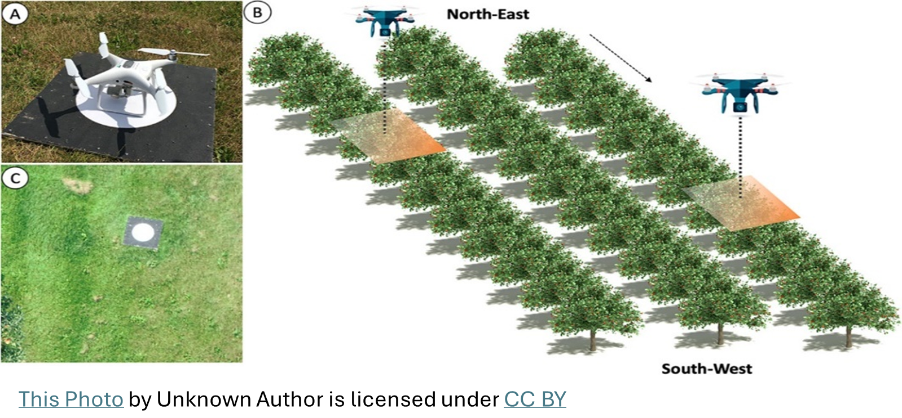
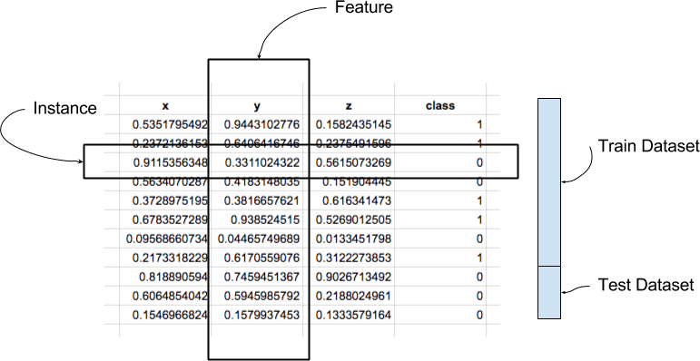
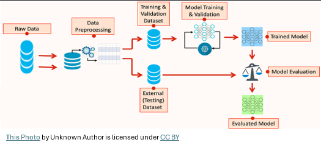
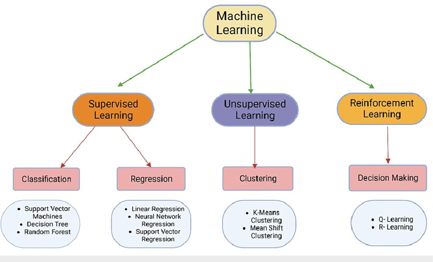

Introduction to Machine Learning
Introduction
Artificial intelligence (AI) is a technology that equips machines with the ability to simulate human behavior, specifically cognitive processes.
Machine learning (ML) is a branch of AI that focuses on using data and algorithms to learn in the same way that humans do, gradually improving its accuracy. Machine learning algorithms develop a mathematical model that helps make predictions or decisions based on sample historical data, or training data, without needing explicit programming. By integrating statistics and computer science, machine learning facilitates the creation of predictive models.

ML models prioritize prediction accuracy and are very good at handling complex data, while classical statistical models focus on understanding relationships and making inferences. Nevertheless, both have their place in data science, depending on the problem and context.
ML offers numerous benefits that increase agricultural efficiencies, improve crop yield, and reduce food cost of production. ML can identify patterns and trends in massive data that humans may miss entirely.
This analysis requires little human intervention: simply feed in the dataset of interest and allow the ML system to assemble and refine its algorithms which will continuously improve with more data input over time.
The drawback of ML, it requires large training datasets that are both accurate and unbiased. Gathering enough data and having a system that can handle it may also be a drain on resources. ML can also be error-prone, depending on the input. With too small a sample size, the system may generate a perfectly logical algorithm that is completely incorrect or misleading. ML is a powerful tool that transforms industries, however, it’s crucial to understand its potential and limitations.
Features of Machine Learning
- Machine learning utilizes data to identify patterns within a dataset.
- It learns from past data and improves autonomously over time.
- As a data-driven technology, machine learning shares similarities with data mining, both of which involve working with large volumes of data.
ML: The Jargon

Instance: A single row (observation) of data is called an instance
Feature: A single column (independent variable, attribute) is called a feature. The predictor is called Target
Data Type: Data can be quantitative (e.g., regression) or qualitative (e.g., classification)
Training Dataset: A dataset to feed into our ML to train the model
Testing Dataset: A new dataset to validate the accuracy of the model
Data: Machine learning requires data to train the models. This data could be anything from images and text to numerical values and more.
Algorithms: These are the methods or techniques used to analyze the data. Different algorithms are used depending on the task, such as classification, regression, clustering, etc.
Training: This is the process where the algorithm learns from the data. During training, the algorithm adjusts its parameters to minimize errors and improve accuracy.
Prediction/Inference: After training, the model can make predictions or decisions based on new, unseen data.
Evaluation: The performance of the model is assessed using metrics like accuracy, precision, recall, etc., to ensure it meets the desired goals.
The ML workflow
- STEP 0: Define the Problem and Collect/Gather the data that will be used to train the model
- STEP 1 - Data pre-processing:
- Clean the dataset to handle missing values, incorrect data, and remove duplicates.
- Perform exploratory data analysis (EDA) to understand the patterns, trends, and relationships within the data
- Divide the data into training and test sets
- Data transformation and normalization (training and test sets) to make it suitable for modeling.
- STEP 2 - Train the Model:
- Choose an ML model appropriate with the data (the target)
- Cross-validation: Divide the training dataset into “k” subsets or “folds”. The model training and validation process is repeated “k” times, with each of the k folds used exactly once as the validation data, and the remaining k-1 folds used as training data
- Tune the model (some ML): based on the performance metrics, adjust the model parameters. Hyperparameter tuning can be done manually or through automated methods like grid search or random search. For simplicity, we will not cover this and will accept the default parametrization.
- STEP 3 - Evaluate the Model:
- Assess the model’s performance using cross-validation results
- Run the final model
- STEP 4 - Test the Model: Once the model is fine-tuned, evaluate it on the test set to assess its performance.

Data Pre-processing in ML
Once you import your dataset into R, data pre-processing is the next crucial stage. Data pre-processing, also known as data preparation, data wrangling, or feature engineering, involves several tasks:
Data Collection: Gather data from various sources.
Data Cleaning: Identifying and correcting errors or inconsistencies in the data.
Feature Selection: Choosing relevant input variables for the model.
Data Transformation: Converting raw data into a suitable format for modeling.
Feature Engineering: Creating new variables from existing data.
Train-Test Split: Divide data into training and testing sets. There are two competing concerns:
- With less training data, your parameter estimates have greater variance.
- With less testing data, your performance statistic will have greater variance.
- We should be concerned with dividing data such that neither variance is too high: usually 80% for training and 20% for testing (Thump rule)
Scaling and Normalization: Ensure features are on a similar scale
Dimensionality Reduction: Reducing the number of features while preserving information if needed.
Accurate predictions depend on high-quality data. Hence, properly prepared data simplifies model training and improves real-time project performance.
Categories of Machine Learning
Various ML algorithms that are commonly used can be classified under two categories:
1. Supervised learning
2. Unsupervised learningEach of these categories has their respective sub-categories. 
insert->footnote